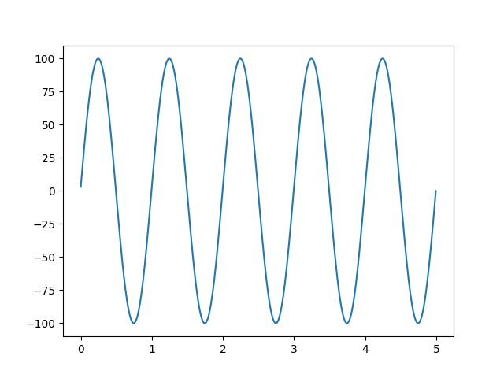
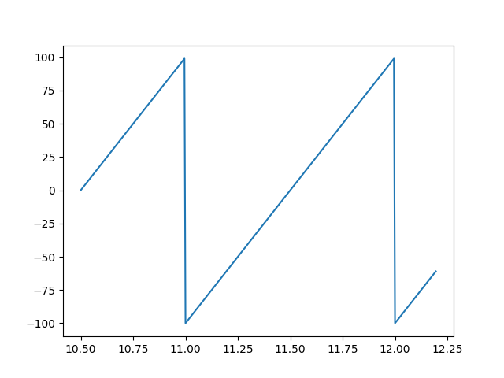

Reading data from an EDF file
Simple use
To read data from and EFD file, simply open the file and read the signal
of interest. To illustrate this, a sample EDF test file
(“test_generator_2”) was downloaded from EDFBrowser
testfiles, and Python was
run from an interactive ipython shell with matplotlib for plotting.
# Import the relevant edfrw function.
from edfrw import open_edf
# Open the file in reading (default) mode.
>>> edf = open_edf('test_generator_2.edf')
# Use `print` to display a summary of the file.
>>> print(edf)
Subject ID: X X X X
Recording ID: Startdate 10-Dec-2009 X X test_generator
Start date: 2009-12-10
Start time: 12:44:02
Duration: 0:10:00
Nr of data records: 600
Dur of data record: 1.0
Nr of signals: 12
Signal labels: ['squarewave', 'ramp', 'pulse', 'ECG', 'noise', 'sine 1 Hz', 'sine 8 Hz', 'sine 8.5 Hz', 'sine 15 Hz', 'sine 17 Hz', 'sine 50 Hz', 'EDF Annotations']
# `print` also works on the record header. Try e.g.
# print(f.header)
# Read and plot the first 5 seconds of data stored in the signal
# "sine 1 Hz".
>>> x, y = edf.read_signal("sine 1 Hz", from_second=0, to_second=5)
>>> plot(x, y)
# Close the file if it is no longer required.
>>> edf.close()

Instead of using the signal name, it is possible to refer to a signal by its index (starting from 0). Thus, to read a few seconds of signal “ramp”, which is in position 1:
>>> edf = open_edf('test_generator_2.edf')
>>> x, y = edf.read_signal(1, from_second=10.5, to_second=12.2)
>>> edf.close()
>>> plot(x, y)

Signal information
EDF signals are stored in a list in the main edfrw file:
>>> edf = open_edf('test_generator_2.edf')
>>> edf.signals
[<EDFSignal squarewave>,
<EDFSignal ramp>,
<EDFSignal pulse>,
<EDFSignal ECG>,
<EDFSignal noise>,
<EDFSignal sine 1 Hz>,
<EDFSignal sine 8 Hz>,
<EDFSignal sine 8.5 Hz>,
<EDFSignal sine 15 Hz>,
<EDFSignal sine 17 Hz>,
<EDFSignal sine 50 Hz>,
<EDFSignal EDF Annotations>]
This can be used to inspect signals individually. For example, to see the properties of the first signal (i.e. signal 0),
>>> sig = edf.signals[0]
>>> print(sig)
label squarewave
transducer_type
physical_dim uV
physical_min -1000.0
physical_max 1000.0
digital_min -32768
digital_max 32767
prefiltering
number_of_samples_in_data_record 200
reserved
sampling_freq 200.0
gain 0.030518043793392843
Additional functions
The module edfrw.reader provides additional functions for reading EDF data. These are probably most useful for larger applications where it may be convenient to read raw data from each block (i.e. data record), or to iterate along data blocks, etc.
The function read_record reads
data from a given record (indexed from 0) and returns it raw, as stored
by edf. The recipient then must unpack and convert the data samples as
required.
>>> edf = open_edf('test_generator_2.edf')
>>> samples = edf.read_record(0)
>>> size(samples)
4502
>>> samples[:10]
b'\xcc\x0c\xcc\x0c\xcc\x0c\xcc\x0c\xcc\x0c'
>>> type(samples)
bytes
A related function,
read_signal_from_record
also reads data from only one edf data block (i.e. a record), but
unpacks the data and converts to physical values. It may be used as the
building block for larger EDF reading applications.
Limitations
Currently, edfrw only works for reading EDF files. Data from EDF+C (i.e. continuous recording with annotations) files can also be read but the “EDF Annotations” signal will not be properly parsed. EDF+D files (i.e. interrupted recording) are not supported.